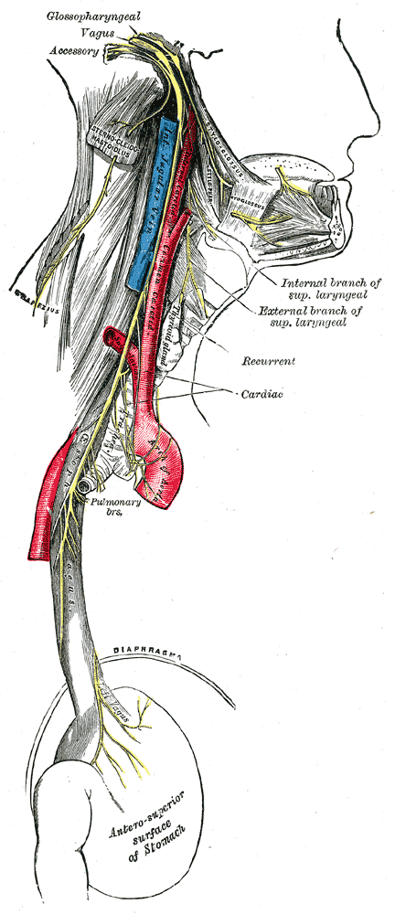

미주신경 (Vagus Nerve)

| # | 원문 | 한국어 | 설명 |
|---|---|---|---|
| 1 | Glossopharyngeal | 설인두신경 | |
| 2 | Vagus | 미주신경 | |
| 3 | Accessory | 부신경 | |
| 4 | Internal branch of sup. laryngeal | 상후두신경의 내가지 | |
| 5 | External branch of sup. laryngeal | 상후두신경의 외가지 | |
| 6 | Recurrent | 되돌이후두신경(반회후두신경) | |
| 7 | Cardiac | 심장가지 | |
| 8 | Pulmonary brs. | 폐가지 | |
| 9 | DIAPHRAGMA | 가로막(횡격막) | |
| 10 | Left Vagus | 왼쪽 미주신경 | |
| 11 | Antero-superior surface of Stomach | 위의 앞위면 | |
| 12 | Sterno-cleido-mastoideus | 목빗근 | |
| 13 | Stylo-glossus | 붓혀근 | |
| 14 | Stylo-pharyngeus | 붓인두근 | |
| 15 | Hyo-glossus | 목뿔혀근 | |
| 16 | Int. Jugular Vein | 속목정맥 | |
| 17 | Common Carotid | 온목동맥 | |
| 18 | Trapezius | 등세모근 | |
| 19 | Thyroid gland | 갑상샘 | |
| 20 | Arch of Aorta | 대동맥활 |
쉽게 풀면
미주신경은 이름 그대로 "이리저리 방황하는(vagus, 라틴어로 떠돌다)" 신경이라는 뜻으로, 목에서 시작해 가슴과 배 속 여러 장기를 두루 거쳐가는 긴 배선이다. 회사 본사(뇌)와 여러 지사(심장·폐·위장)를 잇는 통신 케이블이라고 생각하면 된다. 이 케이블은 양방향으로 정보를 주고받는데, 뇌에서 "심장 박동을 늦춰라", "소화를 진행해라" 같은 지시를 내려보내는 동시에, 장기 쪽에서 "지금 배가 부르다", "심장이 이런 상태다" 같은 정보를 뇌로 끌어올린다. 명상이나 심호흡을 하면 마음이 차분해지는 것도, 미주신경을 통해 몸이 "안전하다"는 신호를 뇌로 보내면서 자율신경계가 이완 모드로 전환되기 때문이다.
왜 중요한가
미주신경은 뇌와 심혈관·소화·면역계를 잇는 대표적인 통로이기 때문에, 스트레스·불안 연구부터 심박변이도 분석, 최근에는 미주신경 자극을 이용한 우울증·간질 치료 연구까지 폭넓은 분야에서 핵심 변수로 다뤄진다. 또한 장내 미생물과 뇌의 상호작용을 설명하는 장-뇌 축 연구에서도 정보 전달 경로로 자주 등장한다.
어디에 있고 어떻게 생겼나
- 미주신경(vagus nerve)은 뇌신경 12쌍 중 10번째(CN X)이며 좌우 한 쌍이다. 가장 긴 자율신경이다.
- 감각 섬유가 대부분이며 내장 구심성 섬유의 약 80~90%를 나른다.
- 운동 기원은 모호핵(nucleus ambiguus)과 미주신경 등쪽 운동핵이고, 감각 신경절은 상신경절과 하신경절(nodose ganglion)이다.
- 목에서 대장 횡행결장 앞부분까지 대부분의 장기에 부교감 운동 신경을 공급한다(부신 제외). 인두, 입천장, 후두의 골격근도 지배해 발성과 삼킴을 돕는다.
맡은 기능
- 심장에서는 오른쪽 가지가 동방결절(sinoatrial node), 왼쪽 가지가 방실결절(atrioventricular node)에 작용해 심박수를 늦춘다.
- 위장관의 연동운동과 분비를 조절하고, 식후 포만감, 구역반사, 발한에 관여한다. 염증 반사(inflammatory reflex)로 염증을 조절한다.
- 주된 부교감신경으로 '휴식과 소화' 상태와 관련되며, 신경전달물질은 아세틸콜린이다.
연구에서 다루는 방식
- 손상되면 혈압과 심박수가 오르고, 쉰 목소리와 삼킴 곤란이 생길 수 있다.
- 미주신경이 감각 섬유가 대부분이라는 점이 장기에서 뇌로 가는 신호를 다루는 연구의 배경이 된다. 논문에서는 운동(원심성)과 감각(구심성) 기능 중 어느 쪽을 다루는지 구분해 적는다.
논문에서는 이렇게 쓰입니다
실제 논문에서
국내 학술지 논문에서 이 용어가 쓰인 문장을 그대로 옮겼다. 제목·학술지·연도와 원문 링크를 함께 적었다.
“이들은 뇌의 신경생리학적 변화를 유도하며 미주신경의 활성화 및 뇌와 신체 간의 정보 전달을 촉진한다.”
신체지각 및 뇌가소성 향상을 위한 접촉즉흥무용의 기본요소 분석: 호흡, 걷기, 접촉을 중심으로, 한국무용연구, 2025 · KCI 한국학술지인용색인 · 원문 보기 ↗
“이러한 결과는 그라운딩을 단순한 신체 안정화 기법이 아닌, 복측 미주신경계 기반의 조율을통해 현존과 관계적 안전으로 확장되는 통합적 회복 기제로 이해할 수 있는 이론적 틀을 제시한다.”
현존을 위한 무용동작심리치료의 그라운딩 기법 : 다미주신경이론 관점의 이론적 고찰, 무용동작심리치료연구, 2025 · KCI 한국학술지인용색인 · 원문 보기 ↗
예시 문장
아래 예문은 용어의 쓰임을 보이려고 만든 것으로, 실제 논문 문장이 아니다.
평소 미주신경이 활발하게 작동하는 사람일수록 스트레스를 받은 뒤 몸이 다시 안정된 상태로 돌아오는 속도가 더 빨랐다는 뜻이다.
신경학·정신의학 분야에서는 미주신경에 전기 자극을 가하는 치료법이 약물 저항성 간질이나 우울증 증상 완화에 효과가 있는지를 검증하는 임상연구가 활발히 이루어진다.
장-뇌 축 연구에서는 장 속 미생물이 만들어내는 신호가 미주신경을 거쳐 뇌 기능에까지 영향을 준다는 경로를 탐구할 때 이 용어가 사용된다.
조금 더 깊게 보면
미주신경은 원심성(뇌에서 장기로 나가는) 섬유와 구심성(장기에서 뇌로 들어오는) 섬유를 함께 포함하는데, 실제로는 구심성 섬유가 훨씬 더 많은 비중을 차지하는 것으로 알려져 있어 몸의 상태를 뇌로 전달하는 감각 통로로서의 역할이 특히 주목받는다. 미주신경의 활동 수준을 간접적으로 추정하는 대표적인 지표로 심박변이도(특히 고주파 성분)가 흔히 쓰이며, 미주신경 자극 치료는 목 부위에 전극을 이식하거나 귀 주변 피부를 통해 비침습적으로 자극하는 방식으로 이루어진다.
주의할 점
미주신경은 단일한 하나의 경로가 아니라 소화·심혈관·호흡 등 서로 다른 장기로 가지를 뻗은 여러 갈래의 섬유 다발이다. "미주신경을 자극하면 무조건 이완된다"는 식으로 단순화하면, 장-뇌 축 연구에서 나타나는 장기별·개인별 반응 차이를 놓치기 쉽다.
참고 문헌
- Wikipedia contributors. (n.d.). Vagus nerve. Wikipedia.
- Wikipedia contributors. (n.d.). Cranial nerves. Wikipedia.